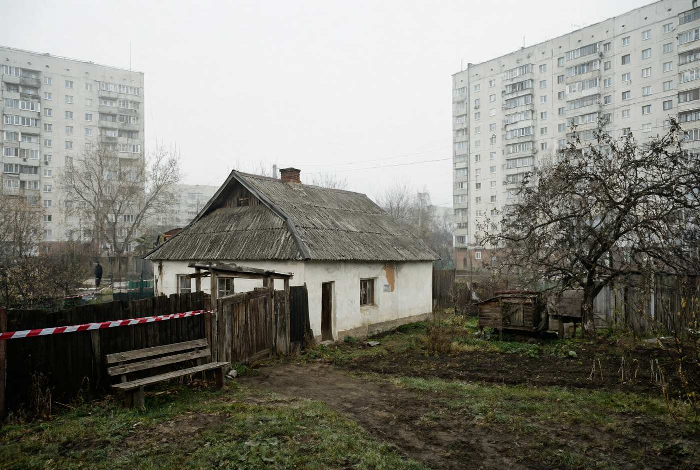
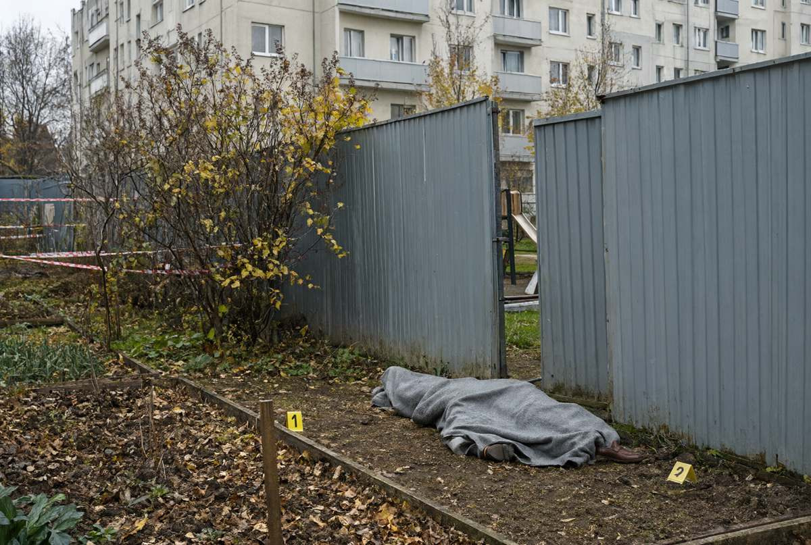
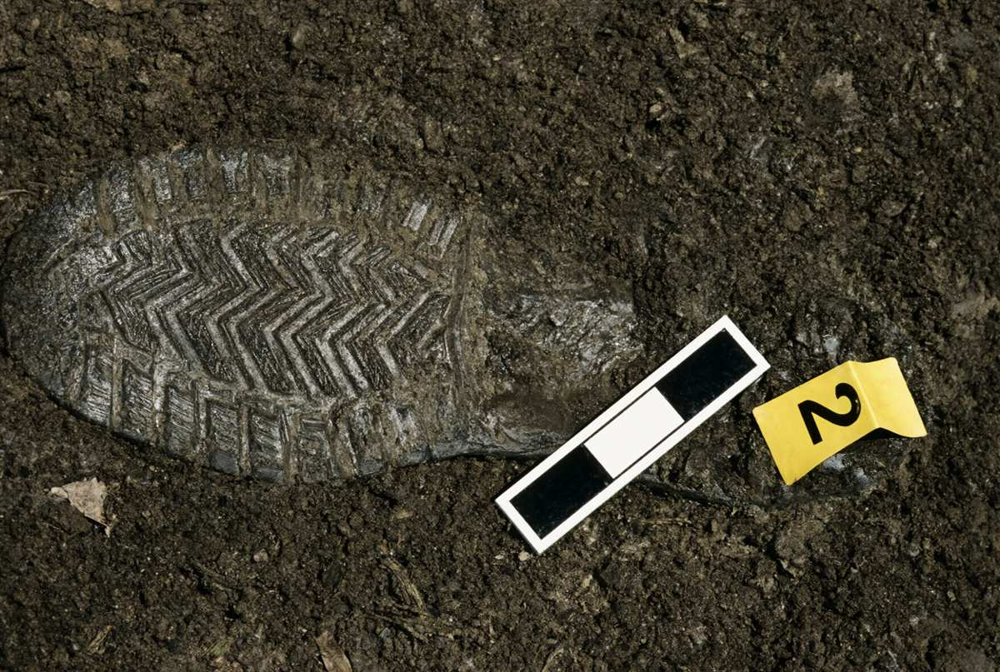
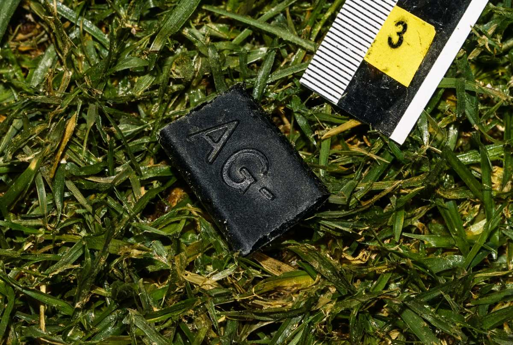

Національна поліція України
Головне управління Національної поліції в Івано-Франківській області
Слідче управління
Фототаблиця
до протоколу огляду місця події від 16.10.2026
м. Івано-Франківськ, вул. Пасічна, 41-А (домоволодіння, город) та прилегла ділянка двору ЖК «Дем'янів лаз» ·
провадження № 12026090010002417 · фотографував спеціаліст-криміналіст Федорів О.І., фотоапарат «Canon EOS 90D»

Фото № 1. Загальний вигляд домоволодіння за адресою вул. Пасічна, 41-А з боку вулиці. На задньому плані —
секції ЖК «Дем'янів лаз». Знято 16.10.2026 о 08:44.

Фото № 2. Пролом у паркані з профнастилу між двором ЖК і городом (відсутні дві секції, ширина 1,9 м) та місце
виявлення тіла (тіло накрите). Вигляд з боку двору ЖК. Номерними табличками позначено місця виявлення слідів.
Аркуш 1 з 2
Фототаблиця до протоколу огляду місця події від 16.10.2026 · продовження

Фото № 3. Відбиток підошви взуття № 2 з візерунком «ялинка» у ґрунті городу між тілом і проломом. Довжина
відбитка ~31 см. Масштабна зйомка: поруч масштабна лінійка, номерна табличка «2».

Фото № 4. Фрагмент чорної гуми 1,7×1,2 см з рельєфними літерами «…AG-…» у траві за 0,6 м від голови тіла.
Поруч масштабна лінійка, номерна табличка «3». Вилучено (пакет № 3).